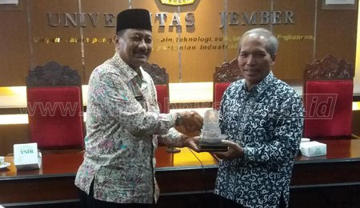

Sejarah Universitas Jember
Cikal bakal Universitas Jember berasal dari gagasan dr. R. Achmad bersama-sama dengan R. Th. Soengedi dan R. M. Soerachman yang bercita-cita mendirikan perguruan tinggi di Jember. Untuk mewujudkan cita-cita tersebut pada tanggal 1 April 1957, ketiganya membentuk panitia yang diberi nama Panitia Triumviraat dengan komposisi Ketua dr. R. Achmad; Penulis R. Th. Soengedi, dan Bendahara R. M. Soerachman.
Selanjutnya Panitia Triumviraat ini pada tanggal 5 Oktober 1957 membentuk yayasan dengan nama Yayasan Universitas Tawang Alun (disahkan dengan Akta Notaris tanggal 8 Maret 1958 Nomor 13 di Jember). Yayasan Universitas Tawang Alun inilah yang kemudian mendirikan universitas swasta di Jember dengan nama Universitas Tawang Alun yang kemudian disingkat UNITA. Dalam perjalanannya, ketiga tokoh tersebut mendapatkan dukungan penuh Bupati Jember saat itu, R. Soedjarwo.
Pada tahun 1959 tepatnya pada tanggal 26 Januari 1959, R. Soedjarwo diangkat sebagai Ketua Yayasan Unita. Secara kebetulan, pada periode 1957 sampai dengan 1964, R. Soedjarwo juga menjabat sebagai Ketua DPRD Swatantra. Boleh dikata, sebagai Bupati Jember waktu itu, R. Soedjarwo mempunyai perhatian cukup besar terhadap pembangunan pendidikan di Kabupaten Jember. Mengingat bahwa anggaran pemerintah saat itu masih sangat terbatas. Maka, untuk menunjang bidang pendidikan, R. Soedjarwo bersama tokoh-tokoh masyarakat kemudian mendirikan Yayasan Pendidikan Kabupaten Jember (YPKD) dengan menggali dana dari masyarakat untuk menunjang dunia pendidikan. Salah satu cara yang unik dalam mengumpulkan dana, R. Soedjarwo minta sumbangan dari masyarakat Kabupaten Jember berupa buah kelapa dan botol kosong untuk dijual. Selanjutnya dananya dipergunakan untuk membantu Unita dan sekolah-sekolah yang lain.(1) Untuk membesarkan Unita, R. Soedjarwo kemudian membantu mendirikan gedung kampus Unita yang ada di jalan PB Sudirman seluas 656 meter persegi. Gedung tersebut dibangun di atas tanah seluas 2.160 meter persegi dengan biaya pembangunan sebesar Rp 23.243,66. Dana tersebut bersumber dari dana YPKD. Sejak tahun 1960, Unita semakin berkembang. Jumlah fakultas, satu demi satu bertambah. Meliputi, Fakultas Sosial Politik, Fakultas Kedokteran, Fakultas Keguruan Ilmu Pendidikan dan Fakultas Pertanian. Seiring perjalanan waktu, untuk menambah prasarana kampus, Unita mengundang USAID untuk mendapatkan sumbangan berupa alat laboratorium dan buku-buku.(1)